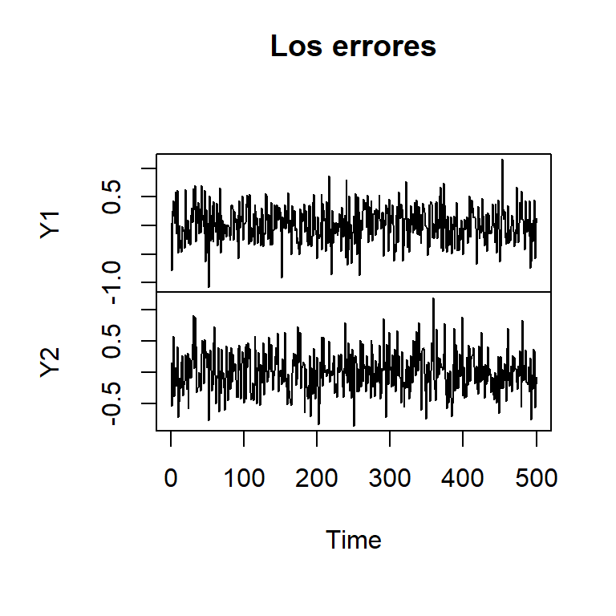
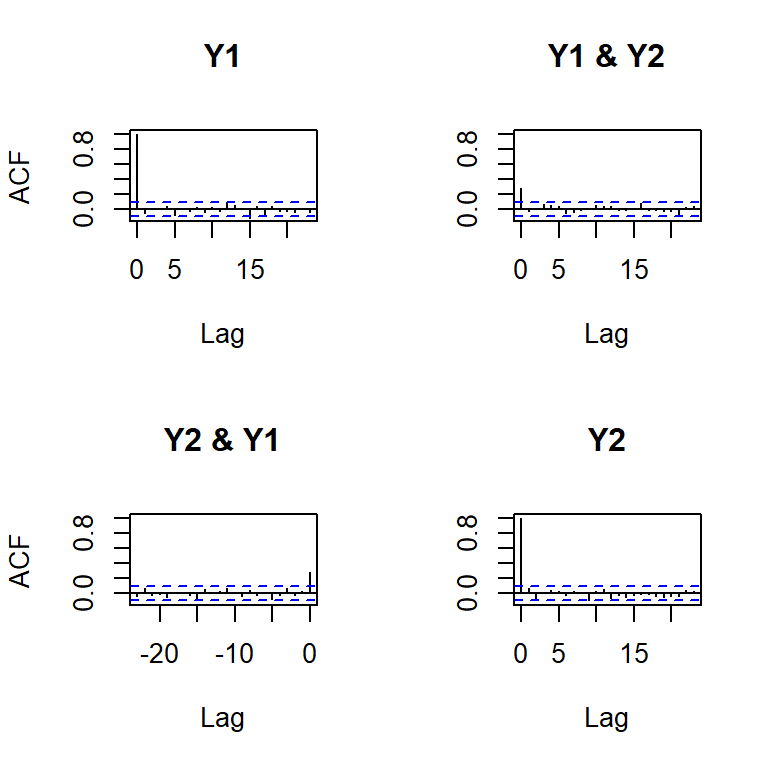
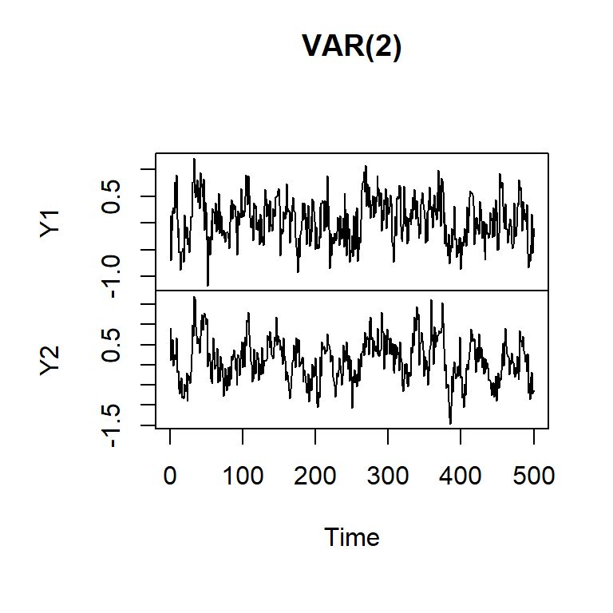
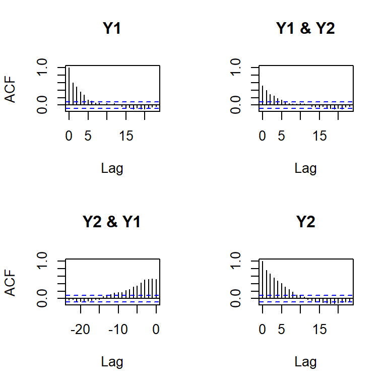

![]()
library(ggplot2)
library(forecast)
library(fpp2)
library(astsa)
library(car)
library(TSA)
library(tseries)
library(vars)
library(MTS)Tema VIII: Modelos lineales multivariados de series temporales.
1 librerías
2 Ejemplo de VAR(2) simulado
Especificar las matrices de parámetros:
Phi_1 <- matrix(c(0.5, 0.1,
0.2, 0.4), nrow = 2, byrow = TRUE)
Phi_2 <- matrix(c(0.2, -0.1,
0.1, 0.3), nrow = 2, byrow = TRUE)Especificar la matriz de covariancias de los errores:
Sigma <- matrix(c(0.1, 0.02,
0.02, 0.1), nrow = 2)simVAR2 <- VARMAsim(nobs = 500, arlags = c(1, 2), phi = cbind(Phi_1, Phi_2), sigma = Sigma)names(simVAR2)[1] "series" "noises"simVAR2_realizaciones <- ts(simVAR2$series, names = c("Y1", "Y2"))
simVAR2_errores <- ts(simVAR2$noises, names = c("Y1", "Y2"))plot(simVAR2_errores, main = "Los errores", col = 1:2)
stats::acf(simVAR2_errores)
plot(simVAR2_realizaciones, main = "VAR(2)", col = 1:2)
stats::acf(simVAR2_realizaciones)
2.1 Determinar el lag de acuerdo a los criterios
infoCI <- VARselect(simVAR2_realizaciones, lag.max = 3,
type = "const")
infoCI$selection
AIC(n) HQ(n) SC(n) FPE(n)
2 2 2 2
$criteria
1 2 3
AIC(n) -4.49452896 -4.58739206 -4.57560098
HQ(n) -4.47458689 -4.55415529 -4.52906950
SC(n) -4.44372103 -4.50271218 -4.45704915
FPE(n) 0.01116994 0.01017938 0.010300152.2 Estimar el modelo
2.2.1 Con el paquete MTS
MTSVAR2 <- MTS::VAR(simVAR2_realizaciones, p = 2)Constant term:
Estimates: 0.01851519 0.01477665
Std.Error: 0.01469737 0.01497295
AR coefficient matrix
AR( 1 )-matrix
[,1] [,2]
[1,] 0.433 0.104
[2,] 0.208 0.476
standard error
[,1] [,2]
[1,] 0.0456 0.0445
[2,] 0.0465 0.0453
AR( 2 )-matrix
[,1] [,2]
[1,] 0.2136 -0.0698
[2,] 0.0824 0.2146
standard error
[,1] [,2]
[1,] 0.0471 0.0424
[2,] 0.0480 0.0432
Residuals cov-mtx:
[,1] [,2]
[1,] 0.10098032 0.02894158
[2,] 0.02894158 0.10480260
det(SSE) = 0.009745385
AIC = -4.598961
BIC = -4.531528
HQ = -4.572501 2.2.2 Con el paquete vars
varsVAR2 <- vars::VAR(simVAR2_realizaciones, p = 2, type = "const",
season = NULL, exogen = NULL)
summary(varsVAR2)
VAR Estimation Results:
=========================
Endogenous variables: Y1, Y2
Deterministic variables: const
Sample size: 498
Log Likelihood: -260.153
Roots of the characteristic polynomial:
0.7976 0.7093 0.302 0.302
Call:
vars::VAR(y = simVAR2_realizaciones, p = 2, type = "const", exogen = NULL)
Estimation results for equation Y1:
===================================
Y1 = Y1.l1 + Y2.l1 + Y1.l2 + Y2.l2 + const
Estimate Std. Error t value Pr(>|t|)
Y1.l1 0.43302 0.04563 9.489 < 2e-16 ***
Y2.l1 0.10370 0.04450 2.330 0.0202 *
Y1.l2 0.21363 0.04712 4.533 7.29e-06 ***
Y2.l2 -0.06976 0.04242 -1.644 0.1007
const 0.01852 0.01470 1.260 0.2084
---
Signif. codes: 0 '***' 0.001 '**' 0.01 '*' 0.05 '.' 0.1 ' ' 1
Residual standard error: 0.3194 on 493 degrees of freedom
Multiple R-Squared: 0.392, Adjusted R-squared: 0.387
F-statistic: 79.46 on 4 and 493 DF, p-value: < 2.2e-16
Estimation results for equation Y2:
===================================
Y2 = Y1.l1 + Y2.l1 + Y1.l2 + Y2.l2 + const
Estimate Std. Error t value Pr(>|t|)
Y1.l1 0.20775 0.04649 4.469 9.77e-06 ***
Y2.l1 0.47643 0.04533 10.510 < 2e-16 ***
Y1.l2 0.08244 0.04801 1.717 0.0866 .
Y2.l2 0.21455 0.04321 4.965 9.49e-07 ***
const 0.01478 0.01497 0.987 0.3242
---
Signif. codes: 0 '***' 0.001 '**' 0.01 '*' 0.05 '.' 0.1 ' ' 1
Residual standard error: 0.3254 on 493 degrees of freedom
Multiple R-Squared: 0.6202, Adjusted R-squared: 0.6171
F-statistic: 201.3 on 4 and 493 DF, p-value: < 2.2e-16
Covariance matrix of residuals:
Y1 Y2
Y1 0.10200 0.02924
Y2 0.02924 0.10587
Correlation matrix of residuals:
Y1 Y2
Y1 1.0000 0.2813
Y2 0.2813 1.00002.2.3 Verificar que los autovalores (eigenvalues) tengan módulo menor a 1 (estacionariedad)
roots <- vars::roots(varsVAR2)
roots[1] 0.7976357 0.7092927 0.3019615 0.30196153 Ejemplos reales
3.1 Ejemplo: contaminación, temperatura y mortalidad
Ejemplo 5.10 de Shumway & Stoffer
par(mfrow=c(3,1))
tsplot(cmort, main="Cardiovascular Mortality", ylab="")
tsplot(tempr, main="Temperature", ylab="")
tsplot(part, main="Particulates", ylab="")
pairs(cbind(Mortality=cmort, Temperature=tempr, Particulates=part))
acf2(cmort, 200, main="")
[,1] [,2] [,3] [,4] [,5] [,6] [,7] [,8] [,9] [,10] [,11] [,12] [,13]
ACF 0.77 0.77 0.68 0.65 0.58 0.53 0.48 0.41 0.39 0.32 0.28 0.23 0.18
PACF 0.77 0.44 0.03 0.03 -0.01 -0.05 -0.02 -0.05 0.05 -0.08 -0.03 0.00 -0.06
[,14] [,15] [,16] [,17] [,18] [,19] [,20] [,21] [,22] [,23] [,24] [,25]
ACF 0.13 0.11 0.04 0.01 -0.03 -0.07 -0.08 -0.10 -0.12 -0.13 -0.13 -0.15
PACF -0.06 0.05 -0.10 -0.04 -0.01 -0.03 0.03 0.04 -0.02 0.00 0.01 0.00
[,26] [,27] [,28] [,29] [,30] [,31] [,32] [,33] [,34] [,35] [,36] [,37]
ACF -0.16 -0.14 -0.17 -0.14 -0.15 -0.11 -0.10 -0.07 -0.06 -0.02 0.02 0.06
PACF -0.04 0.07 -0.08 0.03 0.01 0.07 0.03 0.03 0.01 0.04 0.05 0.09
[,38] [,39] [,40] [,41] [,42] [,43] [,44] [,45] [,46] [,47] [,48] [,49]
ACF 0.10 0.14 0.18 0.24 0.29 0.33 0.4 0.44 0.48 0.53 0.55 0.56
PACF 0.05 0.06 0.04 0.12 0.07 0.06 0.1 0.08 0.04 0.11 0.02 0.01
[,50] [,51] [,52] [,53] [,54] [,55] [,56] [,57] [,58] [,59] [,60] [,61]
ACF 0.57 0.6 0.58 0.59 0.57 0.55 0.53 0.51 0.48 0.42 0.39 0.33
PACF 0.02 0.1 0.00 0.03 -0.02 0.01 0.00 0.07 -0.01 -0.09 0.02 -0.04
[,62] [,63] [,64] [,65] [,66] [,67] [,68] [,69] [,70] [,71] [,72] [,73]
ACF 0.30 0.23 0.19 0.15 0.11 0.06 0.04 0.01 -0.03 -0.05 -0.07 -0.09
PACF -0.01 -0.02 -0.03 0.02 -0.01 -0.02 0.02 0.03 0.00 0.00 0.01 0.03
[,74] [,75] [,76] [,77] [,78] [,79] [,80] [,81] [,82] [,83] [,84] [,85]
ACF -0.11 -0.14 -0.15 -0.16 -0.18 -0.19 -0.19 -0.19 -0.17 -0.17 -0.13 -0.12
PACF -0.01 -0.05 0.02 0.00 -0.07 -0.04 0.00 -0.01 0.02 -0.04 0.02 -0.01
[,86] [,87] [,88] [,89] [,90] [,91] [,92] [,93] [,94] [,95] [,96] [,97]
ACF -0.08 -0.06 -0.01 0.03 0.05 0.10 0.13 0.18 0.21 0.26 0.28 0.34
PACF 0.04 -0.02 0.02 -0.01 -0.04 0.02 -0.01 0.00 -0.02 0.00 -0.05 0.05
[,98] [,99] [,100] [,101] [,102] [,103] [,104] [,105] [,106] [,107] [,108]
ACF 0.36 0.41 0.43 0.46 0.49 0.49 0.51 0.49 0.46 0.45 0.40
PACF 0.01 0.05 0.01 0.00 0.08 -0.03 0.03 -0.01 -0.11 0.02 -0.09
[,109] [,110] [,111] [,112] [,113] [,114] [,115] [,116] [,117] [,118]
ACF 0.39 0.34 0.31 0.28 0.25 0.22 0.17 0.14 0.10 0.06
PACF 0.00 -0.01 -0.02 0.02 -0.02 0.03 -0.05 -0.02 0.03 -0.02
[,119] [,120] [,121] [,122] [,123] [,124] [,125] [,126] [,127] [,128]
ACF 0.01 -0.02 -0.07 -0.08 -0.14 -0.14 -0.17 -0.18 -0.20 -0.21
PACF -0.07 0.02 -0.03 -0.01 -0.04 0.01 0.03 -0.02 0.01 -0.01
[,129] [,130] [,131] [,132] [,133] [,134] [,135] [,136] [,137] [,138]
ACF -0.20 -0.22 -0.21 -0.23 -0.23 -0.23 -0.22 -0.20 -0.19 -0.17
PACF 0.06 0.00 -0.01 -0.04 -0.05 -0.03 0.00 -0.02 -0.01 -0.02
[,139] [,140] [,141] [,142] [,143] [,144] [,145] [,146] [,147] [,148]
ACF -0.15 -0.12 -0.10 -0.07 -0.03 -0.01 0.03 0.08 0.11 0.16
PACF -0.04 -0.04 -0.04 -0.04 0.02 -0.08 -0.03 0.01 0.02 -0.01
[,149] [,150] [,151] [,152] [,153] [,154] [,155] [,156] [,157] [,158]
ACF 0.19 0.21 0.25 0.25 0.28 0.30 0.33 0.35 0.33 0.34
PACF -0.02 -0.05 -0.01 -0.07 0.03 0.07 0.04 0.06 -0.07 0.01
[,159] [,160] [,161] [,162] [,163] [,164] [,165] [,166] [,167] [,168]
ACF 0.31 0.32 0.30 0.29 0.26 0.23 0.2 0.15 0.12 0.06
PACF -0.04 0.04 0.05 0.02 0.01 -0.03 0.0 -0.02 -0.02 -0.03
[,169] [,170] [,171] [,172] [,173] [,174] [,175] [,176] [,177] [,178]
ACF 0.04 0.01 -0.03 -0.07 -0.10 -0.14 -0.16 -0.19 -0.20 -0.21
PACF 0.03 0.03 -0.03 -0.06 -0.05 0.02 -0.04 0.01 0.04 0.02
[,179] [,180] [,181] [,182] [,183] [,184] [,185] [,186] [,187] [,188]
ACF -0.23 -0.24 -0.27 -0.27 -0.28 -0.28 -0.29 -0.28 -0.26 -0.27
PACF 0.01 0.02 -0.02 -0.03 0.03 0.01 -0.03 0.00 0.04 -0.04
[,189] [,190] [,191] [,192] [,193] [,194] [,195] [,196] [,197] [,198]
ACF -0.25 -0.24 -0.22 -0.19 -0.16 -0.14 -0.12 -0.09 -0.06 -0.01
PACF 0.00 0.01 0.00 0.04 0.03 -0.02 -0.05 0.01 0.03 0.05
[,199] [,200]
ACF 0.01 0.05
PACF 0.00 -0.01acf2(tempr, 100, main="")
[,1] [,2] [,3] [,4] [,5] [,6] [,7] [,8] [,9] [,10] [,11] [,12] [,13]
ACF 0.6 0.62 0.55 0.56 0.48 0.45 0.38 0.35 0.30 0.20 0.11 0.03 -0.01
PACF 0.6 0.40 0.15 0.18 0.00 0.00 -0.06 -0.04 -0.04 -0.16 -0.18 -0.17 -0.08
[,14] [,15] [,16] [,17] [,18] [,19] [,20] [,21] [,22] [,23] [,24] [,25]
ACF -0.09 -0.15 -0.20 -0.25 -0.31 -0.37 -0.41 -0.45 -0.51 -0.49 -0.51 -0.52
PACF -0.09 -0.07 -0.04 -0.03 -0.06 -0.08 -0.06 -0.06 -0.14 -0.02 -0.01 -0.06
[,26] [,27] [,28] [,29] [,30] [,31] [,32] [,33] [,34] [,35] [,36] [,37]
ACF -0.54 -0.52 -0.54 -0.51 -0.48 -0.46 -0.41 -0.35 -0.29 -0.30 -0.24 -0.15
PACF -0.08 -0.03 -0.10 -0.06 -0.01 -0.05 -0.02 0.01 0.04 -0.09 -0.08 0.05
[,38] [,39] [,40] [,41] [,42] [,43] [,44] [,45] [,46] [,47] [,48] [,49]
ACF -0.08 -0.04 0.04 0.07 0.19 0.23 0.28 0.32 0.38 0.45 0.47 0.49
PACF 0.04 -0.02 0.03 -0.05 0.08 0.06 0.03 0.03 0.01 0.07 0.04 0.02
[,50] [,51] [,52] [,53] [,54] [,55] [,56] [,57] [,58] [,59] [,60] [,61]
ACF 0.53 0.53 0.53 0.52 0.50 0.50 0.48 0.43 0.40 0.32 0.29 0.23
PACF 0.05 0.00 0.01 0.00 -0.03 0.02 0.03 -0.06 -0.01 -0.05 -0.03 -0.02
[,62] [,63] [,64] [,65] [,66] [,67] [,68] [,69] [,70] [,71] [,72] [,73]
ACF 0.18 0.11 0.06 0.01 -0.05 -0.11 -0.19 -0.22 -0.29 -0.31 -0.35 -0.39
PACF 0.01 -0.01 -0.02 0.04 0.01 -0.01 -0.02 0.04 -0.05 -0.01 0.03 -0.01
[,74] [,75] [,76] [,77] [,78] [,79] [,80] [,81] [,82] [,83] [,84] [,85]
ACF -0.40 -0.42 -0.44 -0.47 -0.46 -0.46 -0.41 -0.43 -0.40 -0.36 -0.34 -0.29
PACF 0.03 0.03 0.00 -0.02 0.02 0.01 0.08 -0.01 -0.02 0.05 -0.03 0.04
[,86] [,87] [,88] [,89] [,90] [,91] [,92] [,93] [,94] [,95] [,96] [,97]
ACF -0.29 -0.22 -0.17 -0.10 -0.09 -0.01 0.03 0.12 0.15 0.20 0.22 0.26
PACF -0.07 -0.01 0.02 0.01 -0.06 0.04 -0.03 0.06 0.04 -0.01 -0.05 -0.06
[,98] [,99] [,100]
ACF 0.35 0.38 0.39
PACF 0.08 0.07 -0.01acf2(part, 100, main="")
[,1] [,2] [,3] [,4] [,5] [,6] [,7] [,8] [,9] [,10] [,11] [,12] [,13]
ACF 0.55 0.60 0.54 0.53 0.46 0.44 0.37 0.32 0.23 0.21 0.10 0.04 -0.02
PACF 0.55 0.43 0.21 0.14 0.00 0.01 -0.05 -0.08 -0.14 -0.05 -0.15 -0.14 -0.08
[,14] [,15] [,16] [,17] [,18] [,19] [,20] [,21] [,22] [,23] [,24] [,25]
ACF -0.10 -0.14 -0.21 -0.24 -0.29 -0.32 -0.37 -0.41 -0.44 -0.43 -0.46 -0.45
PACF -0.11 -0.05 -0.07 -0.03 -0.01 0.00 -0.06 -0.08 -0.08 -0.01 -0.04 -0.04
[,26] [,27] [,28] [,29] [,30] [,31] [,32] [,33] [,34] [,35] [,36] [,37]
ACF -0.46 -0.43 -0.47 -0.45 -0.41 -0.39 -0.37 -0.34 -0.28 -0.25 -0.20 -0.13
PACF -0.05 0.01 -0.11 -0.11 -0.02 -0.03 -0.04 -0.06 0.01 -0.01 -0.01 0.04
[,38] [,39] [,40] [,41] [,42] [,43] [,44] [,45] [,46] [,47] [,48] [,49]
ACF -0.07 -0.04 0.06 0.08 0.17 0.24 0.28 0.34 0.38 0.44 0.47 0.50
PACF 0.06 0.01 0.09 0.02 0.06 0.11 0.04 0.07 0.04 0.07 0.05 0.04
[,50] [,51] [,52] [,53] [,54] [,55] [,56] [,57] [,58] [,59] [,60] [,61]
ACF 0.54 0.55 0.53 0.55 0.51 0.49 0.46 0.41 0.40 0.29 0.26 0.20
PACF 0.07 0.08 0.00 0.04 -0.01 -0.01 0.01 -0.06 0.04 -0.08 -0.05 -0.01
[,62] [,63] [,64] [,65] [,66] [,67] [,68] [,69] [,70] [,71] [,72] [,73]
ACF 0.15 0.08 0.04 -0.01 -0.09 -0.14 -0.18 -0.23 -0.29 -0.31 -0.35 -0.37
PACF 0.02 -0.02 0.03 0.06 -0.01 0.00 0.01 0.02 -0.06 -0.01 -0.01 0.02
[,74] [,75] [,76] [,77] [,78] [,79] [,80] [,81] [,82] [,83] [,84] [,85]
ACF -0.39 -0.39 -0.44 -0.42 -0.42 -0.43 -0.39 -0.39 -0.37 -0.33 -0.33 -0.26
PACF 0.01 0.05 -0.02 0.01 0.05 0.01 0.06 0.00 0.01 0.02 -0.03 0.02
[,86] [,87] [,88] [,89] [,90] [,91] [,92] [,93] [,94] [,95] [,96] [,97]
ACF -0.26 -0.22 -0.14 -0.10 -0.07 -0.01 0.04 0.11 0.16 0.22 0.23 0.29
PACF -0.02 -0.07 0.02 0.03 -0.04 -0.03 -0.03 0.03 0.03 0.00 -0.05 0.01
[,98] [,99] [,100]
ACF 0.37 0.42 0.41
PACF 0.04 0.11 -0.02par(mfrow=c(3,1))
ccf2(cmort,tempr, 50, main="cmort vs tempr")
ccf2(cmort,part, 50, main="cmort vs part")
ccf2(tempr,part, 50, main="tempr vs part")
data = data.frame(cmort, tempr, part)
plot.ts(data , main = "", xlab = "")
stats::acf(data,lag.max = 100)
#VAR(1)
modvar1= vars::VAR(data, p=1, type="both")
summary(modvar1)
VAR Estimation Results:
=========================
Endogenous variables: cmort, tempr, part
Deterministic variables: both
Sample size: 507
Log Likelihood: -5116.02
Roots of the characteristic polynomial:
0.8931 0.4953 0.1444
Call:
vars::VAR(y = data, p = 1, type = "both")
Estimation results for equation cmort:
======================================
cmort = cmort.l1 + tempr.l1 + part.l1 + const + trend
Estimate Std. Error t value Pr(>|t|)
cmort.l1 0.464824 0.036729 12.656 < 2e-16 ***
tempr.l1 -0.360888 0.032188 -11.212 < 2e-16 ***
part.l1 0.099415 0.019178 5.184 3.16e-07 ***
const 73.227292 4.834004 15.148 < 2e-16 ***
trend -0.014459 0.001978 -7.308 1.07e-12 ***
---
Signif. codes: 0 '***' 0.001 '**' 0.01 '*' 0.05 '.' 0.1 ' ' 1
Residual standard error: 5.583 on 502 degrees of freedom
Multiple R-Squared: 0.6908, Adjusted R-squared: 0.6883
F-statistic: 280.3 on 4 and 502 DF, p-value: < 2.2e-16
Estimation results for equation tempr:
======================================
tempr = cmort.l1 + tempr.l1 + part.l1 + const + trend
Estimate Std. Error t value Pr(>|t|)
cmort.l1 -0.244046 0.042105 -5.796 1.20e-08 ***
tempr.l1 0.486596 0.036899 13.187 < 2e-16 ***
part.l1 -0.127661 0.021985 -5.807 1.13e-08 ***
const 67.585598 5.541550 12.196 < 2e-16 ***
trend -0.006912 0.002268 -3.048 0.00243 **
---
Signif. codes: 0 '***' 0.001 '**' 0.01 '*' 0.05 '.' 0.1 ' ' 1
Residual standard error: 6.4 on 502 degrees of freedom
Multiple R-Squared: 0.5007, Adjusted R-squared: 0.4967
F-statistic: 125.9 on 4 and 502 DF, p-value: < 2.2e-16
Estimation results for equation part:
=====================================
part = cmort.l1 + tempr.l1 + part.l1 + const + trend
Estimate Std. Error t value Pr(>|t|)
cmort.l1 -0.124775 0.079013 -1.579 0.115
tempr.l1 -0.476526 0.069245 -6.882 1.77e-11 ***
part.l1 0.581308 0.041257 14.090 < 2e-16 ***
const 67.463501 10.399163 6.487 2.10e-10 ***
trend -0.004650 0.004256 -1.093 0.275
---
Signif. codes: 0 '***' 0.001 '**' 0.01 '*' 0.05 '.' 0.1 ' ' 1
Residual standard error: 12.01 on 502 degrees of freedom
Multiple R-Squared: 0.3732, Adjusted R-squared: 0.3683
F-statistic: 74.74 on 4 and 502 DF, p-value: < 2.2e-16
Covariance matrix of residuals:
cmort tempr part
cmort 31.172 5.975 16.65
tempr 5.975 40.965 42.32
part 16.654 42.323 144.26
Correlation matrix of residuals:
cmort tempr part
cmort 1.0000 0.1672 0.2484
tempr 0.1672 1.0000 0.5506
part 0.2484 0.5506 1.0000acf(residuals(modvar1)[,1])
acf(residuals(modvar1)[,2])
acf(residuals(modvar1)[,3])
3.1.1 VAR(2)
modvar2 = vars::VAR(data, p=2, type="both")
summary(modvar2)
VAR Estimation Results:
=========================
Endogenous variables: cmort, tempr, part
Deterministic variables: both
Sample size: 506
Log Likelihood: -4987.186
Roots of the characteristic polynomial:
0.8807 0.8807 0.5466 0.4746 0.4746 0.4498
Call:
vars::VAR(y = data, p = 2, type = "both")
Estimation results for equation cmort:
======================================
cmort = cmort.l1 + tempr.l1 + part.l1 + cmort.l2 + tempr.l2 + part.l2 + const + trend
Estimate Std. Error t value Pr(>|t|)
cmort.l1 0.297059 0.043734 6.792 3.15e-11 ***
tempr.l1 -0.199510 0.044274 -4.506 8.23e-06 ***
part.l1 0.042523 0.024034 1.769 0.07745 .
cmort.l2 0.276194 0.041938 6.586 1.15e-10 ***
tempr.l2 -0.079337 0.044679 -1.776 0.07639 .
part.l2 0.068082 0.025286 2.692 0.00733 **
const 56.098652 5.916618 9.482 < 2e-16 ***
trend -0.011042 0.001992 -5.543 4.84e-08 ***
---
Signif. codes: 0 '***' 0.001 '**' 0.01 '*' 0.05 '.' 0.1 ' ' 1
Residual standard error: 5.295 on 498 degrees of freedom
Multiple R-Squared: 0.7227, Adjusted R-squared: 0.7188
F-statistic: 185.4 on 7 and 498 DF, p-value: < 2.2e-16
Estimation results for equation tempr:
======================================
tempr = cmort.l1 + tempr.l1 + part.l1 + cmort.l2 + tempr.l2 + part.l2 + const + trend
Estimate Std. Error t value Pr(>|t|)
cmort.l1 -0.108889 0.050667 -2.149 0.03211 *
tempr.l1 0.260963 0.051292 5.088 5.14e-07 ***
part.l1 -0.050542 0.027844 -1.815 0.07010 .
cmort.l2 -0.040870 0.048587 -0.841 0.40065
tempr.l2 0.355592 0.051762 6.870 1.93e-11 ***
part.l2 -0.095114 0.029295 -3.247 0.00125 **
const 49.880485 6.854540 7.277 1.34e-12 ***
trend -0.004754 0.002308 -2.060 0.03993 *
---
Signif. codes: 0 '***' 0.001 '**' 0.01 '*' 0.05 '.' 0.1 ' ' 1
Residual standard error: 6.134 on 498 degrees of freedom
Multiple R-Squared: 0.5445, Adjusted R-squared: 0.5381
F-statistic: 85.04 on 7 and 498 DF, p-value: < 2.2e-16
Estimation results for equation part:
=====================================
part = cmort.l1 + tempr.l1 + part.l1 + cmort.l2 + tempr.l2 + part.l2 + const + trend
Estimate Std. Error t value Pr(>|t|)
cmort.l1 0.078934 0.091773 0.860 0.390153
tempr.l1 -0.388808 0.092906 -4.185 3.37e-05 ***
part.l1 0.388814 0.050433 7.709 6.92e-14 ***
cmort.l2 -0.325112 0.088005 -3.694 0.000245 ***
tempr.l2 0.052780 0.093756 0.563 0.573724
part.l2 0.382193 0.053062 7.203 2.19e-12 ***
const 59.586169 12.415669 4.799 2.11e-06 ***
trend -0.007582 0.004180 -1.814 0.070328 .
---
Signif. codes: 0 '***' 0.001 '**' 0.01 '*' 0.05 '.' 0.1 ' ' 1
Residual standard error: 11.11 on 498 degrees of freedom
Multiple R-Squared: 0.4679, Adjusted R-squared: 0.4604
F-statistic: 62.57 on 7 and 498 DF, p-value: < 2.2e-16
Covariance matrix of residuals:
cmort tempr part
cmort 28.034 7.076 16.33
tempr 7.076 37.627 40.88
part 16.325 40.880 123.45
Correlation matrix of residuals:
cmort tempr part
cmort 1.0000 0.2179 0.2775
tempr 0.2179 1.0000 0.5998
part 0.2775 0.5998 1.0000acf(residuals(modvar2)[,1],lag.max=100)
acf(residuals(modvar2)[,2])
acf(residuals(modvar2)[,3])
stats::acf(residuals(modvar2))
VARselect(data, lag.max=10, type="both")$selection
AIC(n) HQ(n) SC(n) FPE(n)
9 5 2 9
$criteria
1 2 3 4 5 6
AIC(n) 11.73780 11.30185 11.26788 11.23030 11.17634 11.15266
HQ(n) 11.78758 11.38149 11.37738 11.36967 11.34557 11.35176
SC(n) 11.86463 11.50477 11.54689 11.58541 11.60755 11.65996
FPE(n) 125216.91717 80972.28678 78268.19568 75383.73647 71426.10041 69758.25113
7 8 9 10
AIC(n) 11.15247 11.12878 11.11915 11.12019
HQ(n) 11.38144 11.38760 11.40784 11.43874
SC(n) 11.73587 11.78827 11.85473 11.93187
FPE(n) 69749.89175 68122.40518 67476.96374 67556.45243AIC (p=9) HQ=Hannan-Quinn (p=5) SC=BIC o criterio de información de Schwarz (p=2)
FPE=Final Predictor Error (p=9)
mod.f1 <- vars::VAR(data, p=2, type="both")
mod.f2 <- vars::VAR(data, p=5, type="both")
mod.f3 <- vars::VAR(data, p=9, type="both")
summary(mod.f1)
VAR Estimation Results:
=========================
Endogenous variables: cmort, tempr, part
Deterministic variables: both
Sample size: 506
Log Likelihood: -4987.186
Roots of the characteristic polynomial:
0.8807 0.8807 0.5466 0.4746 0.4746 0.4498
Call:
vars::VAR(y = data, p = 2, type = "both")
Estimation results for equation cmort:
======================================
cmort = cmort.l1 + tempr.l1 + part.l1 + cmort.l2 + tempr.l2 + part.l2 + const + trend
Estimate Std. Error t value Pr(>|t|)
cmort.l1 0.297059 0.043734 6.792 3.15e-11 ***
tempr.l1 -0.199510 0.044274 -4.506 8.23e-06 ***
part.l1 0.042523 0.024034 1.769 0.07745 .
cmort.l2 0.276194 0.041938 6.586 1.15e-10 ***
tempr.l2 -0.079337 0.044679 -1.776 0.07639 .
part.l2 0.068082 0.025286 2.692 0.00733 **
const 56.098652 5.916618 9.482 < 2e-16 ***
trend -0.011042 0.001992 -5.543 4.84e-08 ***
---
Signif. codes: 0 '***' 0.001 '**' 0.01 '*' 0.05 '.' 0.1 ' ' 1
Residual standard error: 5.295 on 498 degrees of freedom
Multiple R-Squared: 0.7227, Adjusted R-squared: 0.7188
F-statistic: 185.4 on 7 and 498 DF, p-value: < 2.2e-16
Estimation results for equation tempr:
======================================
tempr = cmort.l1 + tempr.l1 + part.l1 + cmort.l2 + tempr.l2 + part.l2 + const + trend
Estimate Std. Error t value Pr(>|t|)
cmort.l1 -0.108889 0.050667 -2.149 0.03211 *
tempr.l1 0.260963 0.051292 5.088 5.14e-07 ***
part.l1 -0.050542 0.027844 -1.815 0.07010 .
cmort.l2 -0.040870 0.048587 -0.841 0.40065
tempr.l2 0.355592 0.051762 6.870 1.93e-11 ***
part.l2 -0.095114 0.029295 -3.247 0.00125 **
const 49.880485 6.854540 7.277 1.34e-12 ***
trend -0.004754 0.002308 -2.060 0.03993 *
---
Signif. codes: 0 '***' 0.001 '**' 0.01 '*' 0.05 '.' 0.1 ' ' 1
Residual standard error: 6.134 on 498 degrees of freedom
Multiple R-Squared: 0.5445, Adjusted R-squared: 0.5381
F-statistic: 85.04 on 7 and 498 DF, p-value: < 2.2e-16
Estimation results for equation part:
=====================================
part = cmort.l1 + tempr.l1 + part.l1 + cmort.l2 + tempr.l2 + part.l2 + const + trend
Estimate Std. Error t value Pr(>|t|)
cmort.l1 0.078934 0.091773 0.860 0.390153
tempr.l1 -0.388808 0.092906 -4.185 3.37e-05 ***
part.l1 0.388814 0.050433 7.709 6.92e-14 ***
cmort.l2 -0.325112 0.088005 -3.694 0.000245 ***
tempr.l2 0.052780 0.093756 0.563 0.573724
part.l2 0.382193 0.053062 7.203 2.19e-12 ***
const 59.586169 12.415669 4.799 2.11e-06 ***
trend -0.007582 0.004180 -1.814 0.070328 .
---
Signif. codes: 0 '***' 0.001 '**' 0.01 '*' 0.05 '.' 0.1 ' ' 1
Residual standard error: 11.11 on 498 degrees of freedom
Multiple R-Squared: 0.4679, Adjusted R-squared: 0.4604
F-statistic: 62.57 on 7 and 498 DF, p-value: < 2.2e-16
Covariance matrix of residuals:
cmort tempr part
cmort 28.034 7.076 16.33
tempr 7.076 37.627 40.88
part 16.325 40.880 123.45
Correlation matrix of residuals:
cmort tempr part
cmort 1.0000 0.2179 0.2775
tempr 0.2179 1.0000 0.5998
part 0.2775 0.5998 1.0000summary(mod.f2)
VAR Estimation Results:
=========================
Endogenous variables: cmort, tempr, part
Deterministic variables: both
Sample size: 503
Log Likelihood: -4900.538
Roots of the characteristic polynomial:
0.9567 0.9567 0.7244 0.7244 0.6888 0.6888 0.6297 0.6154 0.6154 0.6089 0.6089 0.5467 0.5236 0.5236 0.4439
Call:
vars::VAR(y = data, p = 5, type = "both")
Estimation results for equation cmort:
======================================
cmort = cmort.l1 + tempr.l1 + part.l1 + cmort.l2 + tempr.l2 + part.l2 + cmort.l3 + tempr.l3 + part.l3 + cmort.l4 + tempr.l4 + part.l4 + cmort.l5 + tempr.l5 + part.l5 + const + trend
Estimate Std. Error t value Pr(>|t|)
cmort.l1 0.323455 0.046940 6.891 1.73e-11 ***
tempr.l1 -0.185655 0.049216 -3.772 0.000182 ***
part.l1 0.014008 0.028036 0.500 0.617546
cmort.l2 0.308700 0.049512 6.235 9.83e-10 ***
tempr.l2 -0.096823 0.052275 -1.852 0.064603 .
part.l2 0.047622 0.029045 1.640 0.101735
cmort.l3 -0.001276 0.051703 -0.025 0.980319
tempr.l3 -0.008977 0.053975 -0.166 0.867976
part.l3 -0.010063 0.030846 -0.326 0.744390
cmort.l4 -0.045274 0.048982 -0.924 0.355790
tempr.l4 0.084609 0.051802 1.633 0.103053
part.l4 0.051566 0.030187 1.708 0.088238 .
cmort.l5 -0.032411 0.045746 -0.709 0.478967
tempr.l5 -0.034503 0.048297 -0.714 0.475324
part.l5 0.027355 0.029511 0.927 0.354431
const 54.402078 7.579182 7.178 2.67e-12 ***
trend -0.011888 0.002174 -5.468 7.27e-08 ***
---
Signif. codes: 0 '***' 0.001 '**' 0.01 '*' 0.05 '.' 0.1 ' ' 1
Residual standard error: 5.25 on 486 degrees of freedom
Multiple R-Squared: 0.733, Adjusted R-squared: 0.7242
F-statistic: 83.4 on 16 and 486 DF, p-value: < 2.2e-16
Estimation results for equation tempr:
======================================
tempr = cmort.l1 + tempr.l1 + part.l1 + cmort.l2 + tempr.l2 + part.l2 + cmort.l3 + tempr.l3 + part.l3 + cmort.l4 + tempr.l4 + part.l4 + cmort.l5 + tempr.l5 + part.l5 + const + trend
Estimate Std. Error t value Pr(>|t|)
cmort.l1 -0.084717 0.053775 -1.575 0.115816
tempr.l1 0.214738 0.056383 3.809 0.000158 ***
part.l1 -0.056303 0.032118 -1.753 0.080235 .
cmort.l2 -0.004149 0.056721 -0.073 0.941726
tempr.l2 0.263840 0.059886 4.406 1.30e-05 ***
part.l2 -0.080909 0.033274 -2.432 0.015393 *
cmort.l3 0.104052 0.059231 1.757 0.079597 .
tempr.l3 -0.009285 0.061834 -0.150 0.880702
part.l3 0.001576 0.035338 0.045 0.964441
cmort.l4 -0.014750 0.056115 -0.263 0.792780
tempr.l4 0.114293 0.059345 1.926 0.054701 .
part.l4 0.027187 0.034583 0.786 0.432164
cmort.l5 -0.067813 0.052407 -1.294 0.196288
tempr.l5 0.113712 0.055329 2.055 0.040395 *
part.l5 -0.080796 0.033809 -2.390 0.017238 *
const 38.165220 8.682787 4.396 1.36e-05 ***
trend -0.002871 0.002490 -1.153 0.249533
---
Signif. codes: 0 '***' 0.001 '**' 0.01 '*' 0.05 '.' 0.1 ' ' 1
Residual standard error: 6.014 on 486 degrees of freedom
Multiple R-Squared: 0.5713, Adjusted R-squared: 0.5572
F-statistic: 40.48 on 16 and 486 DF, p-value: < 2.2e-16
Estimation results for equation part:
=====================================
part = cmort.l1 + tempr.l1 + part.l1 + cmort.l2 + tempr.l2 + part.l2 + cmort.l3 + tempr.l3 + part.l3 + cmort.l4 + tempr.l4 + part.l4 + cmort.l5 + tempr.l5 + part.l5 + const + trend
Estimate Std. Error t value Pr(>|t|)
cmort.l1 0.111002 0.093677 1.185 0.23662
tempr.l1 -0.343695 0.098220 -3.499 0.00051 ***
part.l1 0.233798 0.055951 4.179 3.48e-05 ***
cmort.l2 -0.110401 0.098810 -1.117 0.26441
tempr.l2 -0.018518 0.104323 -0.178 0.85919
part.l2 0.283086 0.057965 4.884 1.41e-06 ***
cmort.l3 0.050046 0.103182 0.485 0.62788
tempr.l3 -0.175038 0.107716 -1.625 0.10481
part.l3 0.201801 0.061559 3.278 0.00112 **
cmort.l4 -0.088654 0.097754 -0.907 0.36490
tempr.l4 -0.099762 0.103381 -0.965 0.33503
part.l4 0.203919 0.060244 3.385 0.00077 ***
cmort.l5 -0.238730 0.091294 -2.615 0.00920 **
tempr.l5 0.488471 0.096385 5.068 5.73e-07 ***
part.l5 -0.127458 0.058896 -2.164 0.03094 *
const 47.556747 15.125644 3.144 0.00177 **
trend -0.008704 0.004338 -2.006 0.04538 *
---
Signif. codes: 0 '***' 0.001 '**' 0.01 '*' 0.05 '.' 0.1 ' ' 1
Residual standard error: 10.48 on 486 degrees of freedom
Multiple R-Squared: 0.5364, Adjusted R-squared: 0.5211
F-statistic: 35.14 on 16 and 486 DF, p-value: < 2.2e-16
Covariance matrix of residuals:
cmort tempr part
cmort 27.561 6.375 14.98
tempr 6.375 36.172 37.89
part 14.978 37.890 109.77
Correlation matrix of residuals:
cmort tempr part
cmort 1.0000 0.2019 0.2723
tempr 0.2019 1.0000 0.6013
part 0.2723 0.6013 1.0000summary(mod.f3)
VAR Estimation Results:
=========================
Endogenous variables: cmort, tempr, part
Deterministic variables: both
Sample size: 499
Log Likelihood: -4810.587
Roots of the characteristic polynomial:
0.9818 0.9818 0.831 0.831 0.8258 0.8258 0.7881 0.7881 0.786 0.786 0.7637 0.7406 0.7406 0.7397 0.7397 0.7317 0.7317 0.7243 0.7243 0.7087 0.7087 0.7 0.7 0.6365 0.6365 0.5815 0.5815
Call:
vars::VAR(y = data, p = 9, type = "both")
Estimation results for equation cmort:
======================================
cmort = cmort.l1 + tempr.l1 + part.l1 + cmort.l2 + tempr.l2 + part.l2 + cmort.l3 + tempr.l3 + part.l3 + cmort.l4 + tempr.l4 + part.l4 + cmort.l5 + tempr.l5 + part.l5 + cmort.l6 + tempr.l6 + part.l6 + cmort.l7 + tempr.l7 + part.l7 + cmort.l8 + tempr.l8 + part.l8 + cmort.l9 + tempr.l9 + part.l9 + const + trend
Estimate Std. Error t value Pr(>|t|)
cmort.l1 0.314075 0.047493 6.613 1.03e-10 ***
tempr.l1 -0.158741 0.050566 -3.139 0.0018 **
part.l1 -0.018629 0.030352 -0.614 0.5397
cmort.l2 0.316044 0.050209 6.295 7.08e-10 ***
tempr.l2 -0.090368 0.053138 -1.701 0.0897 .
part.l2 0.023989 0.030348 0.790 0.4297
cmort.l3 -0.007748 0.052297 -0.148 0.8823
tempr.l3 -0.026391 0.055146 -0.479 0.6325
part.l3 -0.013932 0.032018 -0.435 0.6637
cmort.l4 -0.019287 0.052444 -0.368 0.7132
tempr.l4 0.054294 0.055617 0.976 0.3295
part.l4 0.052742 0.032415 1.627 0.1044
cmort.l5 0.035483 0.052173 0.680 0.4968
tempr.l5 -0.085980 0.056818 -1.513 0.1309
part.l5 0.036286 0.032955 1.101 0.2714
cmort.l6 -0.006834 0.051966 -0.132 0.8954
tempr.l6 -0.018230 0.055905 -0.326 0.7445
part.l6 0.018051 0.032613 0.553 0.5802
cmort.l7 -0.081734 0.051727 -1.580 0.1148
tempr.l7 0.022646 0.055747 0.406 0.6848
part.l7 0.061218 0.032126 1.906 0.0573 .
cmort.l8 -0.111013 0.049152 -2.259 0.0244 *
tempr.l8 0.069127 0.053756 1.286 0.1991
part.l8 -0.006181 0.030965 -0.200 0.8419
cmort.l9 0.072499 0.046872 1.547 0.1226
tempr.l9 0.010632 0.052187 0.204 0.8386
part.l9 -0.030021 0.030259 -0.992 0.3216
const 57.544284 9.547977 6.027 3.38e-09 ***
trend -0.013541 0.002491 -5.435 8.81e-08 ***
---
Signif. codes: 0 '***' 0.001 '**' 0.01 '*' 0.05 '.' 0.1 ' ' 1
Residual standard error: 5.205 on 470 degrees of freedom
Multiple R-Squared: 0.7459, Adjusted R-squared: 0.7307
F-statistic: 49.27 on 28 and 470 DF, p-value: < 2.2e-16
Estimation results for equation tempr:
======================================
tempr = cmort.l1 + tempr.l1 + part.l1 + cmort.l2 + tempr.l2 + part.l2 + cmort.l3 + tempr.l3 + part.l3 + cmort.l4 + tempr.l4 + part.l4 + cmort.l5 + tempr.l5 + part.l5 + cmort.l6 + tempr.l6 + part.l6 + cmort.l7 + tempr.l7 + part.l7 + cmort.l8 + tempr.l8 + part.l8 + cmort.l9 + tempr.l9 + part.l9 + const + trend
Estimate Std. Error t value Pr(>|t|)
cmort.l1 -0.1057941 0.0550028 -1.923 0.055030 .
tempr.l1 0.2135860 0.0585611 3.647 0.000295 ***
part.l1 -0.0627141 0.0351513 -1.784 0.075049 .
cmort.l2 -0.0187046 0.0581483 -0.322 0.747845
tempr.l2 0.2694338 0.0615404 4.378 1.48e-05 ***
part.l2 -0.0961820 0.0351464 -2.737 0.006443 **
cmort.l3 0.1172083 0.0605663 1.935 0.053565 .
tempr.l3 0.0027275 0.0638655 0.043 0.965954
part.l3 -0.0181843 0.0370803 -0.490 0.624077
cmort.l4 0.0099618 0.0607367 0.164 0.869789
tempr.l4 0.1179199 0.0644116 1.831 0.067774 .
part.l4 0.0122126 0.0375404 0.325 0.745085
cmort.l5 -0.0271150 0.0604221 -0.449 0.653812
tempr.l5 0.1092454 0.0658015 1.660 0.097536 .
part.l5 -0.0857474 0.0381658 -2.247 0.025122 *
cmort.l6 -0.0306374 0.0601828 -0.509 0.610940
tempr.l6 -0.0006145 0.0647446 -0.009 0.992432
part.l6 0.0053657 0.0377701 0.142 0.887092
cmort.l7 -0.0218543 0.0599059 -0.365 0.715416
tempr.l7 -0.0431743 0.0645617 -0.669 0.503996
part.l7 0.0156156 0.0372060 0.420 0.674892
cmort.l8 -0.0948518 0.0569240 -1.666 0.096322 .
tempr.l8 -0.0175564 0.0622562 -0.282 0.778066
part.l8 0.0585640 0.0358608 1.633 0.103119
cmort.l9 -0.0170019 0.0542837 -0.313 0.754264
tempr.l9 0.0216664 0.0604391 0.358 0.720143
part.l9 0.0106930 0.0350437 0.305 0.760399
const 50.2638234 11.0576819 4.546 6.98e-06 ***
trend -0.0062823 0.0028853 -2.177 0.029954 *
---
Signif. codes: 0 '***' 0.001 '**' 0.01 '*' 0.05 '.' 0.1 ' ' 1
Residual standard error: 6.028 on 470 degrees of freedom
Multiple R-Squared: 0.5821, Adjusted R-squared: 0.5572
F-statistic: 23.38 on 28 and 470 DF, p-value: < 2.2e-16
Estimation results for equation part:
=====================================
part = cmort.l1 + tempr.l1 + part.l1 + cmort.l2 + tempr.l2 + part.l2 + cmort.l3 + tempr.l3 + part.l3 + cmort.l4 + tempr.l4 + part.l4 + cmort.l5 + tempr.l5 + part.l5 + cmort.l6 + tempr.l6 + part.l6 + cmort.l7 + tempr.l7 + part.l7 + cmort.l8 + tempr.l8 + part.l8 + cmort.l9 + tempr.l9 + part.l9 + const + trend
Estimate Std. Error t value Pr(>|t|)
cmort.l1 0.093558 0.091542 1.022 0.30730
tempr.l1 -0.205321 0.097464 -2.107 0.03568 *
part.l1 0.080000 0.058502 1.367 0.17213
cmort.l2 -0.114077 0.096777 -1.179 0.23909
tempr.l2 -0.044002 0.102422 -0.430 0.66767
part.l2 0.208564 0.058494 3.566 0.00040 ***
cmort.l3 0.073712 0.100801 0.731 0.46498
tempr.l3 -0.250372 0.106292 -2.356 0.01891 *
part.l3 0.178495 0.061713 2.892 0.00400 **
cmort.l4 0.010570 0.101085 0.105 0.91677
tempr.l4 -0.320062 0.107201 -2.986 0.00298 **
part.l4 0.251139 0.062479 4.020 6.79e-05 ***
cmort.l5 -0.074995 0.100561 -0.746 0.45618
tempr.l5 0.167789 0.109514 1.532 0.12616
part.l5 0.015144 0.063520 0.238 0.81167
cmort.l6 -0.077170 0.100163 -0.770 0.44142
tempr.l6 0.132164 0.107755 1.227 0.22061
part.l6 0.049524 0.062861 0.788 0.43120
cmort.l7 0.018490 0.099702 0.185 0.85296
tempr.l7 -0.039541 0.107451 -0.368 0.71305
part.l7 0.075711 0.061922 1.223 0.22206
cmort.l8 -0.199147 0.094739 -2.102 0.03608 *
tempr.l8 0.250292 0.103613 2.416 0.01609 *
part.l8 -0.043202 0.059683 -0.724 0.46952
cmort.l9 0.015349 0.090345 0.170 0.86517
tempr.l9 0.274190 0.100589 2.726 0.00665 **
part.l9 -0.180982 0.058323 -3.103 0.00203 **
const 45.313692 18.403382 2.462 0.01416 *
trend -0.010521 0.004802 -2.191 0.02895 *
---
Signif. codes: 0 '***' 0.001 '**' 0.01 '*' 0.05 '.' 0.1 ' ' 1
Residual standard error: 10.03 on 470 degrees of freedom
Multiple R-Squared: 0.587, Adjusted R-squared: 0.5624
F-statistic: 23.86 on 28 and 470 DF, p-value: < 2.2e-16
Covariance matrix of residuals:
cmort tempr part
cmort 27.089 6.211 12.68
tempr 6.211 36.333 37.69
part 12.675 37.695 100.64
Correlation matrix of residuals:
cmort tempr part
cmort 1.0000 0.1980 0.2428
tempr 0.1980 1.0000 0.6234
part 0.2428 0.6234 1.0000stats::acf(resid(mod.f1), 52)
stats::acf(resid(mod.f2), 52)
stats::acf(resid(mod.f3), 52)
Versión multivariada del contraste de Ljung-Box
serial.test(mod.f1, lags.pt=12, type="PT.adjusted")
Portmanteau Test (adjusted)
data: Residuals of VAR object mod.f1
Chi-squared = 162.35, df = 90, p-value = 4.602e-06serial.test(mod.f2, lags.pt=12, type="PT.adjusted")
Portmanteau Test (adjusted)
data: Residuals of VAR object mod.f2
Chi-squared = 109.19, df = 63, p-value = 0.0002765serial.test(mod.f3, lags.pt=12, type="PT.adjusted")
Portmanteau Test (adjusted)
data: Residuals of VAR object mod.f3
Chi-squared = 57.686, df = 27, p-value = 0.00052593.1.2 Predicción
(mod.pronostico = predict(mod.f1, n.ahead = 24, ci = 0.95)) # 4 semanas$cmort
fcst lower upper CI
[1,] 87.26921 76.89173 97.64668 10.37748
[2,] 87.02842 76.09665 97.96020 10.93178
[3,] 87.29573 75.40528 99.18618 11.89045
[4,] 87.32528 74.90938 99.74119 12.41591
[5,] 87.28237 74.33199 100.23275 12.95038
[6,] 87.17621 73.74964 100.60277 13.42657
[7,] 87.00116 73.11597 100.88634 13.88519
[8,] 86.78430 72.46755 101.10104 14.31674
[9,] 86.53258 71.81185 101.25330 14.72073
[10,] 86.25716 71.16321 101.35111 15.09395
[11,] 85.96792 70.53387 101.40197 15.43405
[12,] 85.67068 69.93014 101.41121 15.74053
[13,] 85.37231 69.35882 101.38580 16.01349
[14,] 85.07662 68.82233 101.33091 16.25429
[15,] 84.78756 68.32281 101.25230 16.46474
[16,] 84.50751 67.86030 101.15472 16.64721
[17,] 84.23850 67.43429 101.04272 16.80422
[18,] 83.98179 67.04340 100.92019 16.93840
[19,] 83.73823 66.68589 100.79057 17.05234
[20,] 83.50824 66.35971 100.65678 17.14853
[21,] 83.29196 66.06268 100.52125 17.22929
[22,] 83.08928 65.79254 100.38601 17.29673
[23,] 82.89988 65.54709 100.25266 17.35279
[24,] 82.72333 65.32418 100.12248 17.39915
$tempr
fcst lower upper CI
[1,] 70.33437 58.31182 82.35692 12.02255
[2,] 69.09470 56.77089 81.41851 12.32381
[3,] 69.22457 56.09460 82.35454 13.12997
[4,] 68.83591 55.32996 82.34186 13.50595
[5,] 69.01016 55.04606 82.97425 13.96409
[6,] 69.02784 54.66842 83.38726 14.35942
[7,] 69.24058 54.48088 84.00028 14.75970
[8,] 69.42757 54.29875 84.55638 15.12882
[9,] 69.67548 54.19959 85.15137 15.47589
[10,] 69.92480 54.13266 85.71694 15.79214
[11,] 70.18945 54.11108 86.26782 16.07837
[12,] 70.45350 54.11980 86.78720 16.33370
[13,] 70.71606 54.15682 87.27531 16.55925
[14,] 70.97206 54.21547 87.72865 16.75659
[15,] 71.21930 54.29151 88.14710 16.92780
[16,] 71.45577 54.38057 88.53098 17.07521
[17,] 71.68018 54.47895 88.88141 17.20123
[18,] 71.89173 54.58344 89.20001 17.30829
[19,] 72.08997 54.69128 89.48865 17.39868
[20,] 72.27479 54.80021 89.74938 17.47459
[21,] 72.44632 54.90833 89.98430 17.53798
[22,] 72.60484 55.01416 90.19551 17.59068
[23,] 72.75079 55.11652 90.38505 17.63426
[24,] 72.88470 55.21454 90.55486 17.67016
$part
fcst lower upper CI
[1,] 56.20206 34.42555 77.97858 21.77651
[2,] 56.97066 34.09865 79.84267 22.87201
[3,] 54.68760 29.56147 79.81373 25.12613
[4,] 54.06954 27.96958 80.16950 26.09996
[5,] 53.02247 26.03038 80.01457 26.99209
[6,] 52.27031 24.64432 79.89629 27.62598
[7,] 51.57798 23.45803 79.69794 28.11995
[8,] 50.95265 22.44679 79.45851 28.50586
[9,] 50.41566 21.61341 79.21791 28.80225
[10,] 49.92440 20.88946 78.95934 29.03494
[11,] 49.49682 20.28223 78.71141 29.21459
[12,] 49.11220 19.75756 78.46685 29.35465
[13,] 48.77353 19.31057 78.23649 29.46296
[14,] 48.47221 18.92535 78.01907 29.54686
[15,] 48.20602 18.59443 77.81761 29.61159
[16,] 47.97048 18.30903 77.63193 29.66145
[17,] 47.76256 18.06281 77.46231 29.69975
[18,] 47.57915 17.85006 77.30824 29.72909
[19,] 47.41758 17.66608 77.16908 29.75150
[20,] 47.27540 17.50683 77.04398 29.76857
[21,] 47.15042 17.36888 76.93196 29.78154
[22,] 47.04067 17.24932 76.83202 29.79135
[23,] 46.94438 17.14563 76.74314 29.79875
[24,] 46.85998 17.05566 76.66431 29.80432fanchart(mod.pronostico)
3.2 Crecimiento de Producto Interno Bruto de UK, Canada y US.
Ejemplo 4.7 Tsay
data=read.table("q-gdp-ukcaus.txt",header=T)
names(data)[1] "year" "mon" "uk" "ca" "us" pib=log(data[,3:5])
plot.ts(pib , main = "", xlab = "")
z=diffM(pib)
z=z*100
plot.ts(z)
stats::acf(z,lag.max = 100)
VARselect(z, lag.max=10, type="both")$selection
AIC(n) HQ(n) SC(n) FPE(n)
2 2 1 2
$criteria
1 2 3 4 5 6
AIC(n) -4.08250806 -4.17429134 -4.12884362 -4.1423954 -4.01596032 -3.94496249
HQ(n) -3.93718359 -3.94177219 -3.80912979 -3.7354869 -3.52185713 -3.36366462
SC(n) -3.72447343 -3.60143594 -3.34116745 -3.1398984 -2.79864260 -2.51282399
FPE(n) 0.01686789 0.01539648 0.01612985 0.0159427 0.01814403 0.01956042
7 8 9 10
AIC(n) -3.84031507 -3.93775259 -3.85573084 -3.74398962
HQ(n) -3.17182251 -3.18206536 -3.01284892 -2.81391302
SC(n) -2.19335579 -2.07597254 -1.77913001 -1.45256802
FPE(n) 0.02184202 0.01996242 0.02187576 0.02475373modvar <- vars::VAR(z, p=2, type="both")
summary(modvar)
VAR Estimation Results:
=========================
Endogenous variables: uk, ca, us
Deterministic variables: both
Sample size: 123
Log Likelihood: -287.037
Roots of the characteristic polynomial:
0.6073 0.6073 0.3506 0.3506 0.3497 0.03663
Call:
vars::VAR(y = z, p = 2, type = "both")
Estimation results for equation uk:
===================================
uk = uk.l1 + ca.l1 + us.l1 + uk.l2 + ca.l2 + us.l2 + const + trend
Estimate Std. Error t value Pr(>|t|)
uk.l1 0.381382 0.093564 4.076 8.46e-05 ***
ca.l1 0.119483 0.098885 1.208 0.2294
us.l1 0.029763 0.092451 0.322 0.7481
uk.l2 0.059440 0.092120 0.645 0.5201
ca.l2 0.114635 0.087572 1.309 0.1931
us.l2 0.004037 0.094226 0.043 0.9659
const 0.259888 0.125644 2.068 0.0408 *
trend -0.001881 0.001440 -1.306 0.1942
---
Signif. codes: 0 '***' 0.001 '**' 0.01 '*' 0.05 '.' 0.1 ' ' 1
Residual standard error: 0.5456 on 115 degrees of freedom
Multiple R-Squared: 0.3919, Adjusted R-squared: 0.3549
F-statistic: 10.59 on 7 and 115 DF, p-value: 3.174e-10
Estimation results for equation ca:
===================================
ca = uk.l1 + ca.l1 + us.l1 + uk.l2 + ca.l2 + us.l2 + const + trend
Estimate Std. Error t value Pr(>|t|)
uk.l1 0.3587877 0.0954904 3.757 0.000271 ***
ca.l1 0.3276663 0.1009202 3.247 0.001530 **
us.l1 0.4834042 0.0943546 5.123 1.22e-06 ***
uk.l2 -0.1931659 0.0940158 -2.055 0.042183 *
ca.l2 -0.1806622 0.0893750 -2.021 0.045561 *
us.l2 0.0008259 0.0961658 0.009 0.993162
const 0.0374013 0.1282309 0.292 0.771063
trend 0.0012031 0.0014698 0.819 0.414753
---
Signif. codes: 0 '***' 0.001 '**' 0.01 '*' 0.05 '.' 0.1 ' ' 1
Residual standard error: 0.5568 on 115 degrees of freedom
Multiple R-Squared: 0.5266, Adjusted R-squared: 0.4977
F-statistic: 18.27 on 7 and 115 DF, p-value: 3.615e-16
Estimation results for equation us:
===================================
us = uk.l1 + ca.l1 + us.l1 + uk.l2 + ca.l2 + us.l2 + const + trend
Estimate Std. Error t value Pr(>|t|)
uk.l1 0.474371 0.104760 4.528 1.46e-05 ***
ca.l1 0.262883 0.110717 2.374 0.019235 *
us.l1 0.204382 0.103514 1.974 0.050729 .
uk.l2 -0.307989 0.103142 -2.986 0.003454 **
ca.l2 -0.118446 0.098051 -1.208 0.229523
us.l2 0.064554 0.105501 0.612 0.541827
const 0.476886 0.140679 3.390 0.000959 ***
trend -0.002628 0.001613 -1.630 0.105886
---
Signif. codes: 0 '***' 0.001 '**' 0.01 '*' 0.05 '.' 0.1 ' ' 1
Residual standard error: 0.6109 on 115 degrees of freedom
Multiple R-Squared: 0.3751, Adjusted R-squared: 0.337
F-statistic: 9.86 on 7 and 115 DF, p-value: 1.372e-09
Covariance matrix of residuals:
uk ca us
uk 0.29768 0.03121 0.07336
ca 0.03121 0.31006 0.15314
us 0.07336 0.15314 0.37318
Correlation matrix of residuals:
uk ca us
uk 1.0000 0.1027 0.2201
ca 0.1027 1.0000 0.4502
us 0.2201 0.4502 1.00003.2.1 Dianósticos
stats::acf(resid(modvar), 52)
serial.test(modvar, lags.pt=12, type="PT.adjusted")
Portmanteau Test (adjusted)
data: Residuals of VAR object modvar
Chi-squared = 94.625, df = 90, p-value = 0.3488shapiro.test(residuals(modvar)[,1])
Shapiro-Wilk normality test
data: residuals(modvar)[, 1]
W = 0.94777, p-value = 0.0001218shapiro.test(residuals(modvar)[,2])
Shapiro-Wilk normality test
data: residuals(modvar)[, 2]
W = 0.98196, p-value = 0.09955shapiro.test(residuals(modvar)[,3])
Shapiro-Wilk normality test
data: residuals(modvar)[, 3]
W = 0.92658, p-value = 4.645e-06mvnormtest::mshapiro.test(t(residuals(modvar)))
Shapiro-Wilk normality test
data: Z
W = 0.93507, p-value = 1.611e-053.2.2 Pronósticos
(mod.pronostico = predict(modvar, n.ahead = 5, ci = 0.95)) $uk
fcst lower upper CI
[1,] 0.2063964 -0.8629563 1.275749 1.069353
[2,] 0.1108196 -1.0509138 1.272553 1.161733
[3,] 0.1315856 -1.1062302 1.369401 1.237816
[4,] 0.1646873 -1.1265558 1.455930 1.291243
[5,] 0.1909274 -1.1266148 1.508470 1.317542
$ca
fcst lower upper CI
[1,] 0.1197730 -0.971593 1.211139 1.091366
[2,] 0.3038651 -1.149907 1.757637 1.453772
[3,] 0.3961285 -1.154968 1.947225 1.551096
[4,] 0.4143519 -1.155928 1.984632 1.570280
[5,] 0.4380329 -1.138916 2.014982 1.576949
$us
fcst lower upper CI
[1,] 0.01719209 -1.180118 1.214502 1.197310
[2,] 0.26250987 -1.144909 1.669929 1.407419
[3,] 0.24995690 -1.203845 1.703758 1.453802
[4,] 0.30233628 -1.168107 1.772779 1.470443
[5,] 0.31277249 -1.162612 1.788157 1.475385fanchart(mod.pronostico)